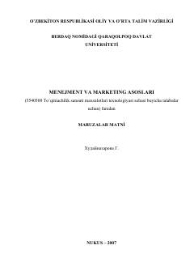

MVMenejment va marketing fanining nazariy asoslari hamda boshqaruv mexanizmlari haqida o'quv qo'llanma.
Ushbu o'quv qo'llanma menejment va marketing fanining nazariy asoslari, boshqaruv tizimlari hamda bozor iqtisodiyoti sharoitida xo'jalik yuritish mexanizmlarini yoritib beradi. Kitob to'qimachilik sanoati texnologiyasi yo'nalishidagi talabalar uchun mo'ljallangan bo'lib, boshqaruv mahorati va iqtisodiy samaradorlik masalalarini qamrab oladi.